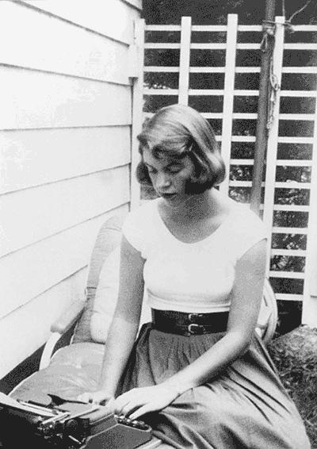

___ ___ ___ ___
( ) .-. ( ) ( ) ( )
.--. ___ ___ | | ___ ___ ( __) .---. .-.. | | .---. | |_ | | .-.
/ _ \ ( )( ) | | ( )( ) (''") / .-, \ / \ | | / .-, \ ( __) | |/ \
. .' `. ; | | | | | | | | | | | | (__) ; | ' .-, ; | | (__) ; | | | | .-. .
| ' | | | | | | | | | | | | | | .'` | | | . | | | .'` | | | ___ | | | |
_\_`.(___) | ' | | | | | | | | | | / .'| | | | | | | | / .'| | | |( ) | | | |
( ). '. ' `-' | | | | | | | | | | / | | | | | | | | | / | | | | | | | | | |
| | `\ | `.__. | | | ' ' ; ' | | ; | ; | | | ' | | | ; | ; | | ' | | | | | |
; '._,' ' ___ | | | | \ `' / | | ' `-' | | `-' ' | | ' `-' | ' `-' ; | | | |
'.___.' ( )' | (___) '_.' (___) `.__.'_. | \__.' (___) `.__.'_. `.__. (___)(___)
; `-' ' | |
.__.' (___)
_ _ _
__ _ _ __ __| | | |__ ___ _ __ __ _____ _ __| | _____
/ _` | '_ \ / _` | | '_ \ / _ \ '__| \ \ /\ / / _ \| '__| |/ / __|
| (_| | | | | (_| | | | | | __/ | \ V V / (_) | | | <\__ \
\__,_|_| |_|\__,_| |_| |_|\___|_| \_/\_/ \___/|_| |_|\_\___/

Biography
Sylvia Plath was a famous poet known for the morbid contents of her works, which captured her depression and mental suffering. Plath married the British poet Ted Hughes on June 16, 1956; after he left her for the German immigrant Assia Gutmann Wevill, Plath continued to take of her two children Frieda and Nicholas Hughes before falling into a depression. It was only after her suicide, where she died to carbon monoxide poisoning after sealing her head in the oven, when her texts gained great recognition. In 1982, years after her death, Plath won a posthumous Pulitzer Prize.
Her works